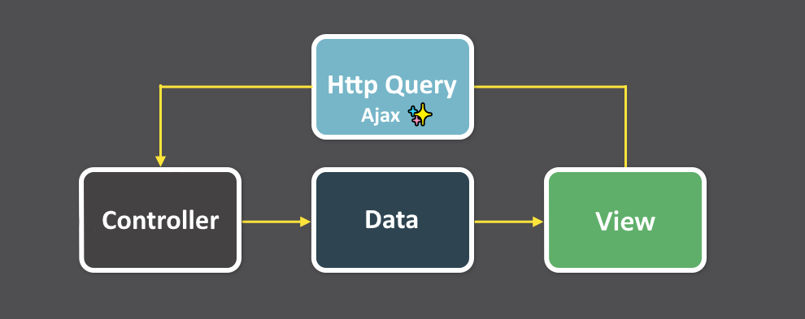

UI réactive dans Unity
Pourquoi et comment brancher sa UI sur un state observable ?Samuel BOUCHET
Développeur Unity chez Lonestone

Le plan
- Histoire
- Intérêt et limite
- Structure pour StarTeam
- Code review et démo

L'histoire (1/4)
Le web en 2013
- Les webmestres préfixent leur recherche par
JQuery - La boucle classique est 
Apparition de React
- React est une bibliothèque de rendu
- La promesse:
Vue=fn(Donnée)- → Paradigme déclaratif
- Collocalisation de la vue et du comportement: Programmation par composant
Flux & Redux (2015)
one-way data flow structure

On s'inspire et on garde:
- Circulation des données en sens unique
- Organisation en composants autonomes
- Le composant s'abonne aux fragments de données dont il a besoin
- Centralisation du store minimal mais suffisant
- Utilisation de sélecteurs pour accéder aux données calculées
Démo
Intérêts et limites (2/4)
Raison 1 : Prédictibilité
Les modèles et les outils fournis par Redux permettent de comprendre plus facilement quand, où, pourquoi et comment l'état de votre application est mis à jour, et comment la logique de votre application se comportera lorsque ces changements se produiront.
Source:
https://redux.js.org/tutorials/essentials/part-1-overview-concepts
Raison 2 : Transactionnalité
- En modifiant le state action après action, on garantit son intégrité.
- Mise en réseau: les changements de states sont spécifiés et normalisés, ce qui facilite la transmission de messages de changement d'état
Raison 3 : Injection d'état
- Phase de dev:
- mettre le jeu dans l'état où la fonctionnalité est testable
- Phase de debug:
- attacher une image de l'état du jeu lors d'une remontée de bug
- mettre le jeu dans l'état où le bug est reproductible
- Phase de runtime:
- initialiser une sauvegarde de n'importe quel état
Raison 4 : Testabilité
Démo un peu plus loin
Raison 5 : Voyage dans le temps
Fonctionnalité de undo: garder une sauvegarde de l'état précédent.
Raison 6 : Découpler données et vue
- Souvent dans Unity, les objets de la scène sont source de vérité mais cette donnée n'est pas accessible facilement au serveur et aux autres joueurs
→ En déportant la source de vérité dans un state dédié, et en construisant les
composants comme des "images réactives" de cet état on facilite le partage et les tests.
Limite 1 : Lourdeur et rigueur
- Les changements de states doivent être spécifiés et normalisés
- Du boilerplate
- Le state devra suivre une structure précise et cohérente
- Soit en contrôlant avec le l'outillage
- Soit en faisant preuve de rigueur (code reviews et bonne compréhension des mécaniques par tous les membres de l'équipe)
Limite 2 : Nécessite une compréhension globale du système
- Une action = une transaction. Ex: Une action pour changer les point de vie ? NON
- → Une action "utilisation d'un objet"
- → Une action "échec d'un jet de risque"
- → Etc.
- Source de vérité unique centralisée (Single source of truth)
- Non redondance
- Externalisation des données calculées
- State en lecture seule
Limite 3 : Animations et transitions
- Les états n'indiquent que la situation finale
- Chaque composant est autonome pour passer de son état actuel vers son état cible, ce qui rend l'orchestration difficile.
Architecture Générale (3/4)
- Données statiques
- Règles de jeu
- Données de partie (GameState)
- Données locales (LocalState)
Données statiques
- Context: client + serveur
- Cycle de modification : version
- Initialisées au démarrage de l'application
- Immuables, accès en lecture seul global et static
Règles du jeu
- Context: client + serveur
- Cycle de modification : une partie
- Transmises avec la partie (1 fois)
- Immuables, accès en lecture seule
Données de jeu
- Context: client + serveur
- Cycle de modification : une action
- Transmises 1 fois lors de la connexion
- Mise à jour synchronisée serveur / clients
Données locales
- Context: client
- Cycle de modification : à volonté
- Une instance par client, jamais transmise
Outils de lecture du state
- Les accesseurs pour faciliter l'utilisation et découpler l'utilisation du state de sa forme - Des sélecteurs pour mémoïser des données calculées - Un composant surchargeable (ConnectedMonoBehaviour) qui fournit les accès au stateCode review (4/4)
Tests
Conclusion
Samuel BOUCHET
Développeur Unity chez Lonestone

Mod minecraft - Capsule


City Invaders